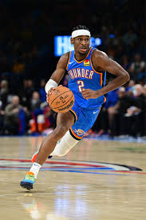
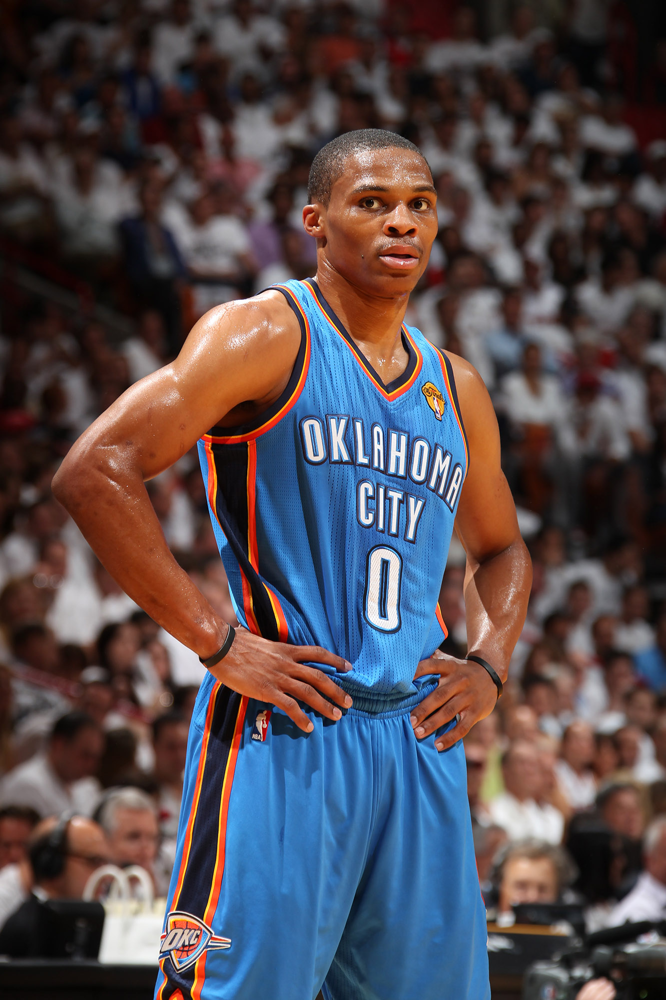
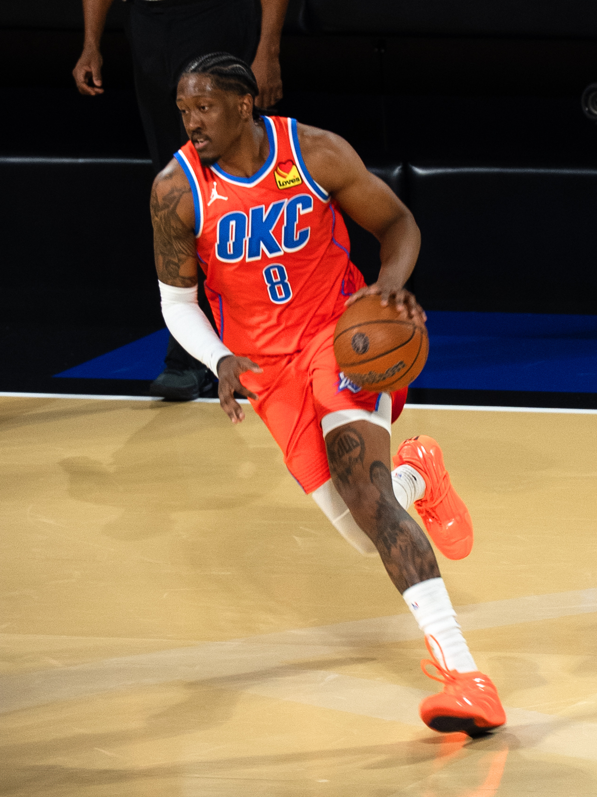
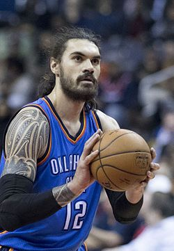
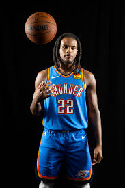

| Rank | Player | Name | Description of why |
|---|---|---|---|
| 1 |  |
Shai Gilgeous-Alexender | Shai Gilgeous-Alexander (SGA) came to the team after a trade with the Clippers. He ended up being the teams franchise player bringing the Thunder its first Championship in 2025, along with an MVP award the same year. |
| 2 |  |
Russell Westbrook | Russel Westbrook stayed on the team for a very long time, making a name for himself and getting an MVP with theteam. He stuck around until it was time to rebuild, and was my favorite player growing up. I used his jersey number when I played |
| 3 |  |
Jalen Williams | Jalen Williams (JDub) is a newer player on the team, who was an all star last season. He dropped 40 points with a broken hand in the playoffs and helped the team win its first championship, playing through a hand injury almost the entire playoffs. |
| 4 |  |
Steven Adams | Steven Adams was another player who stayed with the Thunder for a long time and played alongside Westbrook. He was a great center and a good personality for the team. |
| 5 |  |
Cason Wallace | Cason Wallace is a newer addition to the team, who brings great defense and is very athletic. He has improved a lot making him one of my favorite players on the team. |